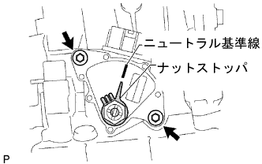

Neutral Start Switch Assembly Adjustment |
| 1. Inspect Neutral Start Switch Assembly |
Apply the parking brake and turn the ignition switch ON.
Depress the brake pedal and check that the engine starts only when the shift lever is in the N or P position, and does not start in any other position.
Check that the back-up lights come on and the reverse position warning buzzer sounds only when the shift lever is in the R position.
If there is a malfunction, adjust the neutral start switch assembly.
| 2. Adjust Neutral Start Switch Assembly |
 |
Move the shift lever to the N position.
Loosen the 2 bolts of the neutral start switch assembly.
Move the neutral start switch assembly to align the neutral basic line with the protrusion of the nut stopper.
Tighten the 2 set bolts.
Fully tighten the nut of the transmission control cable.
After adjustment, inspect the neutral start switch assembly.